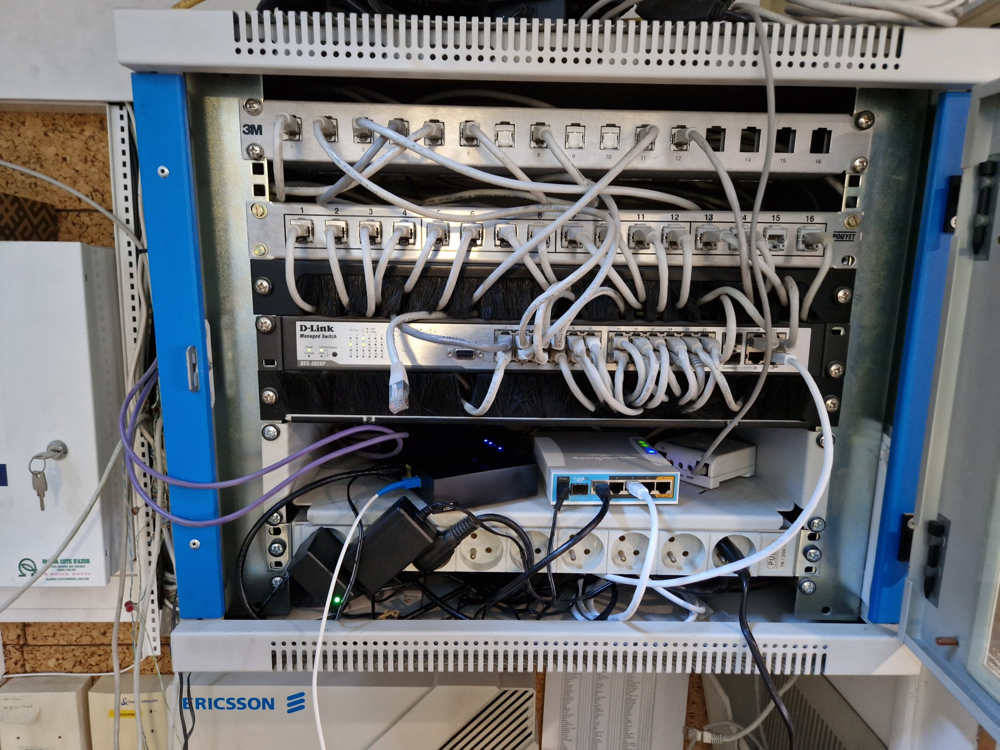
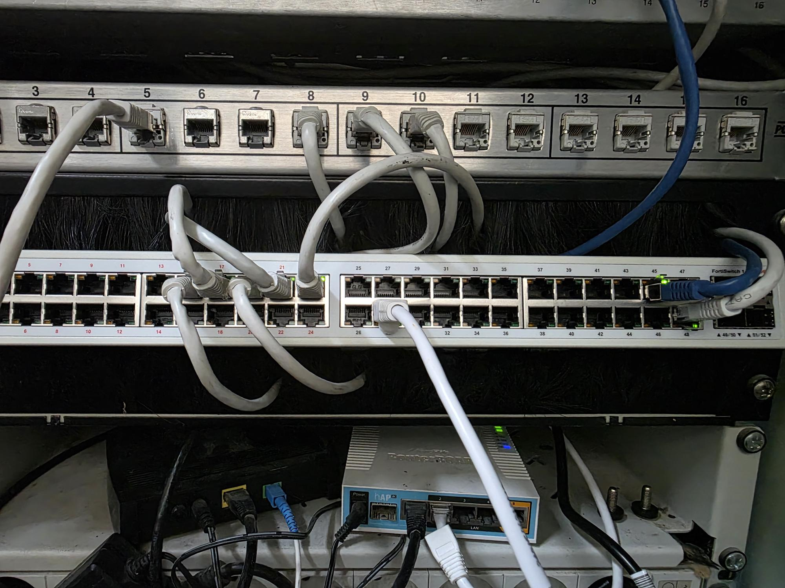

Contexte
Le dépôt de Vinci Construction Bâtiment Sud-Est situé à Cagnes-sur-Mer hébergeait des équipements Fortinet qui n'allaient plus être pris en charge par l'éditeur (fin de support). Au même moment, les équipes du dépôt ont décidé de déplacer leurs bureaux du rez-de-chaussée à l'étage, et de faire installer un nouveau système de vidéosurveillance et d'alarme.
Plutôt que de traiter ces chantiers en silos, nous les avons regroupés. La mission m'a été confiée côté service informatique : refondre l'infrastructure du dépôt de manière cohérente, en coordonnant plusieurs interventions et en adaptant nos équipements aux nouveaux besoins.
Changement et réagencement de la baie informatique
La première étape a consisté à remplacer les équipements Fortinet en fin de prise en charge par du matériel supporté et compatible avec les standards Vinci. J'ai procédé au changement et au réagencement complet de la baie informatique sur place :
- dépose des équipements en fin de support ;
- installation des nouveaux équipements (pare-feu, switch), câblage et étiquetage ;
- recette de la configuration et vérification des flux métier avec les utilisateurs du dépôt.


Déplacement du bureau et recâblage
Les équipes du dépôt ayant décidé de remonter leurs bureaux à l'étage, les prises électriques et Ethernet existantes n'étaient plus adaptées. Nous avons fait intervenir un prestataire pour :
- tester les prises courantes et Ethernet existantes afin d'identifier celles qui pouvaient être réutilisées ;
- recâbler et tirer les prises manquantes au nouvel emplacement des bureaux, en lien avec le nouveau plan de la baie.
Mon rôle a été de coordonner cette intervention avec le prestataire, de valider le plan de recâblage et de contrôler la conformité à la livraison.
Test de débit et choix d'opérateur
Le dépôt remontait régulièrement des lenteurs d'accès. Pour objectiver la situation et appuyer une décision, un test de débit a été réalisé sur la ligne existante. Les mesures ont permis de trancher sur l'opportunité ou non d'un changement d'opérateur plutôt que de décider « à l'intuition ».
Vidéosurveillance et alarme
En parallèle, le dépôt a été équipé d'un nouveau système de vidéosurveillance et d'alarme. Côté infrastructure, cela a demandé :
- d'adapter nos équipements réseau pour que les flux de la vidéosurveillance et de l'alarme soient compatibles et cloisonnés ;
- de préparer les équipements (ports, VLAN, règles) avant la pose du prestataire sécurité ;
- de valider le bon fonctionnement de bout en bout une fois l'installation terminée.
Conclusion
Le dépôt dispose désormais d'une infrastructure à jour, supportée, cohérente avec sa nouvelle disposition physique, et prête à accueillir les services supplémentaires (vidéosurveillance, alarme). Cette mission m'a permis de pratiquer la conception d'une évolution d'infrastructure (choix d'équipements, test de débit, fonctionnement ensemble avec un prestataire sécurité) en même temps que son déploiement, dans un contexte multi-interventions à coordonner. C'est la première situation où j'interviens sur l'ensemble des trois compétences E5 SISR sur un même site.
Compétences validées
Cette situation professionnelle valide les compétences suivantes :
Gérer le patrimoine informatique
Remplacement des équipements en fin de prise en charge, mise à jour du référentiel matériel et du plan de la baie.
Voir la compétence → C 04Travailler en mode projet
Mutualisation et coordination de plusieurs interventions (service IT, prestataire câblage, prestataire sécurité) sur un site unique.
Voir la compétence → C 06Concevoir une solution d'infrastructure réseau
Étude de l'impact de la fin de support, choix des équipements de remplacement, test de débit pour décider le changement d'opérateur, adaptation à la vidéosurveillance et à l'alarme.
Voir la compétence → C 07Installer, tester et déployer une solution d'infrastructure réseau
Changement et réagencement de la baie, recette fonctionnelle avec les utilisateurs, intégration des flux vidéosurveillance et alarme.
Voir la compétence → C 08Exploiter, dépanner et superviser une solution d'infrastructure réseau
Mesures de débit sur la ligne existante, validation de bout en bout des services déployés après intervention des prestataires.
Voir la compétence →